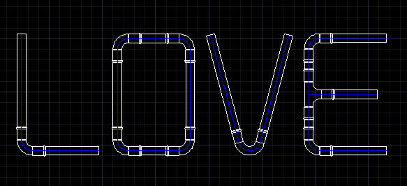

這個範例延續了上一個 {練習}另件範例 ，算是加一點小創意你會發現AutoCAD也可以這樣玩!

這裡一樣可以將您的創意PO上來大家一起討論分享，不侷限特定字母，尺寸也是隨君歡喜!
範例主要強調的是功能運用及空間觀念導入，這次我先不把我的操作步驟正常版放上來~
參加練習的朋友可以藉這個機會腦力激盪、發揮所學(算是隨堂小考啦)~
PS:有建模疑慮或是尺寸問題可以先提出來討論!!
請記得說明以下事項(參與練習的朋友將獲得 威望值+6)，另外這次的範例別忘貼材質:
1.3D成品彩現圖片
2.建模所用到的指令(約略說明即可)
3.使用的AutoCAD版本
4.建模所需時間
5.您的意見補充
--------------------------------------------------------------------------------
完成圖片：
影片展示(請打開喇叭)：